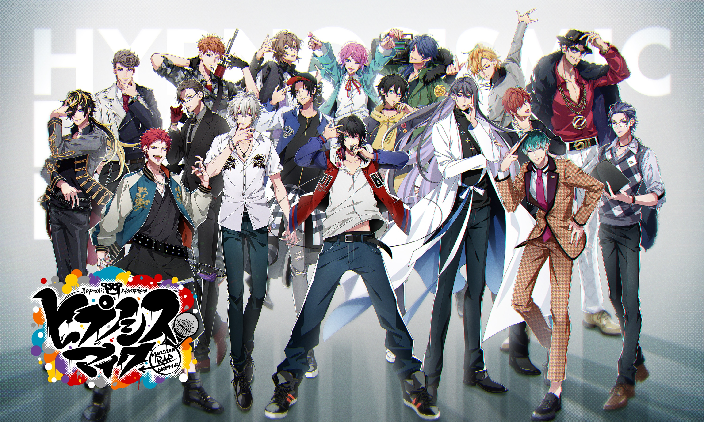
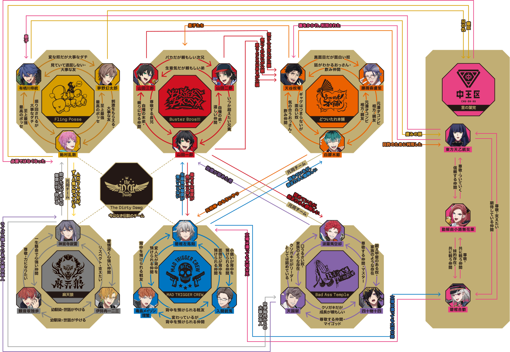

催眠麦克风Hypnosis Mic是以rap演唱对战为核心的正向热血音乐企划，本站整合企划人物、专辑、演出、周边资讯，打造统一粉丝交流平台。

催眠麦克风 -Division Rap Battle-（ヒプノシスマイク-Division Rap Battle-）是由King Records制作的声优 RAP 对决企划，于2017年9月4日正式启动。
以音乐为原作开启的Character Rap Project“催眠麦克风”
共有18位个性十足的角色，分为 「池袋DIVISION」「横滨DIVISION」「涩谷DIVISION」「新宿DIVISION」「大阪DIVISION」「名古屋DIVISION」 6支队伍，并展开激烈的Rap Battle。
为对战增色添彩的Rap Music是在带动全日本嘻哈领域的Rapper与音乐创作者们的共同参与下制作而成的。
各色各样的歌曲通过声优们的演绎和说唱，以音乐为轴心展现出每一位角色之间的故事。
另外，“催眠麦克风”不仅有角色感鲜明的音乐和广播剧，也在不断推出以此为原作而展开的漫画、游戏、舞台剧以及动画等多种跨领域作品。
催眠麦克风（ヒプノシスマイク）的故事设定在废除枪支、依靠催眠麦克风进行争斗的架空都市。
“西历XXXX年。
第三次世界大战后，世界损失了总人口的三分之一。
畏惧人类灭亡的权势者们试图通过辩论来回避战争。
——然而愚蠢的男人们无法停止武器战争。
在西历的最后一年——……。
现存的世界被交付于女性之手并迎来了终结。
H历。
由武力为主导的战争已不复存在。
代替武器的是可以干涉人类精神的特殊麦克风。
其名为“催眠麦克风”。
催眠麦克风可以通过歌词来刺激人类的交感神经与副交感神经，使人陷入不同的状态。
H历3年。
人们通过说唱来决定三六九等。
男性在中王区以外的
池袋DIVISION
横滨DIVISION
涩谷DIVISION
新宿DIVISION
大阪DIVISION
名古屋DIVISION
等区域内生活。
各个DIVISION的代表队伍通过对战的胜利，来获取一定数量的领土。
在并非依赖武器，而是将语言化为力量的今天，男人们赌上自己的威信展开了领土对决。”
催眠麦克风的每个division拥有各自的专属战队，各队风格鲜明，角色形象饱满，传递友情、成长、和解的正向价值观。
企划包含角色单曲、对战专辑、线下声优Live、漫画、动画、官方周边等多元内容，凭借独特的说唱歌曲以及故事剧情收获大量粉丝。
本站收录六个division全部角色资料、音乐专辑、线下演出情报与官方周边，为爱好者提供完整的资讯查阅平台。
